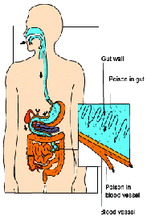
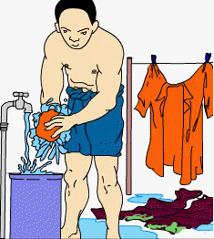

Effect
Inhaled
Short-term Exposure : Excessive exposure can cause irritation of the eyes, nose, throat and respiratory tract, effects on central nervous system, dizziness, convulsions and coma, blood effects, pulmonary damage, delayed pulmonary edema, cancer.

Swallowed
Short-Term Exposure : Toxic. Exposure is associated with carcinogenic and reproductive effects, spontaneous abortion, nerve poisoning and decreased fertility rates in males and fetal death, as well as mutagenic changes.
Skin Contact
Short-Term Exposure: Can be absorbed through the skin. Causes an allergic response. May cause blisters and burns when touching. Effects can be delayed.

First Aid Measures
Inhaled
If it is safe to enter the area, keep it away from exposure. Use a mask or similar device to perform artificial respiration (safety respiration) if necessary. Maintain body temperature and rest. Immediately take it to the doctor.

Swallowed
Do not be stimulated to vomit. If the victim is conscious give milk or plenty of water. Do not be stimulated to vomit or give drink to an unconscious victim. If all of a sudden the ingredients entering into the mouth in small amounts can be rinsed with water until the taste of the material is lost. Immediately take it to the doctor.

Skin Contact
Remove immediately contaminated clothing, jewelry and shoes. Wash the affected area with soap or soft detergent with plenty of water until no chemicals are left (for at least 15-20 minutes). Immediately take it to the doctor.
